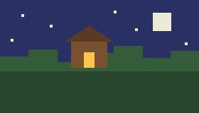

BloqueCraft
Una web de fans de Minecraft para sobrevivir a la primera noche.

Tu primera noche, paso a paso
- Corta madera de un árbol.
- Haz una mesa de trabajo.
- Fabrica un pico de madera.
- Antes de que oscurezca, construye un refugio.
- Pon antorchas dentro y espera a que amanezca.
Los peligros de la noche están en Mobs.